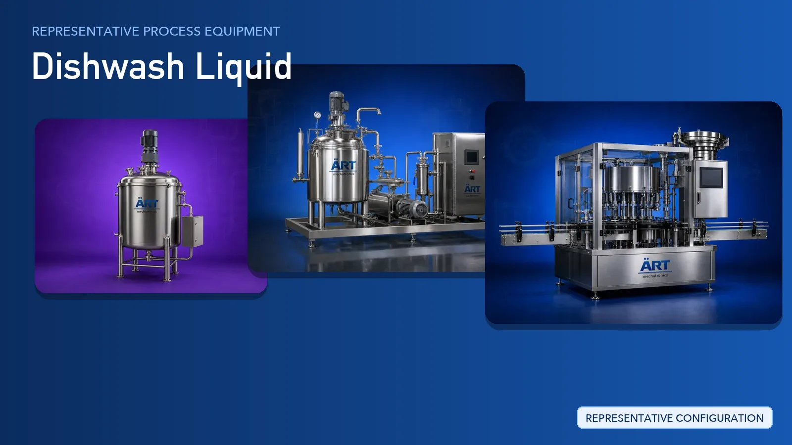

Dishwash Liquid Plant & Machinery Solutions (Liquid Detergent Blending, Filling & Packing Systems)
Dishwash liquid is one of the fastest-moving household cleaning products, produced as a blended liquid or gel of surfactants, water, salts, fragrance, and colour.

About Dishwash Liquid processing
ART Mechatronics provides complete turnkey solutions for dishwash liquid manufacturing plants, covering raw material storage, jacketed batch preparation, high-shear blending, homogenising, bulk holding, bottle rinsing, filling, capping, labelling, and case packing. Our lines are engineered for consistent batch quality, safe chemical handling, and automated operation for domestic and export markets.
Complete Dishwash Liquid Process Flow
Water, surfactants, alkali, salts, fragrance, and colour are received, stored, and dosed into the batch.
Ensures controlled and repeatable batch input.
The water phase is prepared in a jacketed vessel and the acidic surfactant is neutralised under continuous agitation.
Provides:
- Controlled addition of reactive raw materials
- A stable base for the main blend
Surfactants, thickeners, and additives are blended into the base under high-shear mixing.
Ensures:
- Complete dissolution of solids
- Uniform body and clarity
- Consistent batch-to-batch quality
The blend is homogenised and finishing additives such as fragrance and colour are dispersed evenly.
Delivers:
- Uniform appearance
- Even fragrance and colour distribution
- Stable finished liquid
Approved batches are held in bulk storage, allowed to settle clear, and transferred to the filling line.
Allows continuous supply to the packing line.
Empty bottles are rinsed, conveyed to the filler, filled with the finished liquid, and capped.
Suitable for PET and HDPE bottle formats.
Filled bottles are labelled, batch coded, checked for leaks, and packed into cartons for despatch.
Suitable for retail, institutional and bulk despatch.
Turnkey Dishwash Liquid Plant Solutions
ART Mechatronics offers complete turnkey solutions for dishwash liquid manufacturing plants, including:
- Process design & plant layout
- Batch preparation and dosing systems
- High-shear blending and homogenising systems
- Bulk holding tanks and transfer piping
- Automation & control panels
- Rinsing, filling, capping and labelling line integration
- Installation & commissioning
- After-sales support
We customize solutions based on:
- Product type (liquid, gel, concentrate)
- Production capacity
- Batch or continuous blending preference
- Bottle and pack format
Why Choose ART Mechatronics for Dishwash Liquid
- Expertise in liquid detergent and home care processing systems
- Jacketed preparation and high-shear blending know-how
- Homogenising systems for uniform, stable product
- Material selection suited to surfactant and alkali handling
- Integrated rinsing, filling, capping and labelling lines
- Automation and control panels engineered in-house
- Global export capability with installation and commissioning support
Where it's used
Get pricing & specs for the Dishwash Liquid plant
Share the product, target capacity, current process and plant location. These details help our engineers discuss the right machine or line configuration.
One partner, from design to start-up
ART Mechatronics designs, manufactures, installs and commissions your Dishwash Liquid plant solution with regional presence in India, UAE and Thailand.